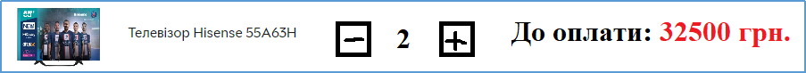
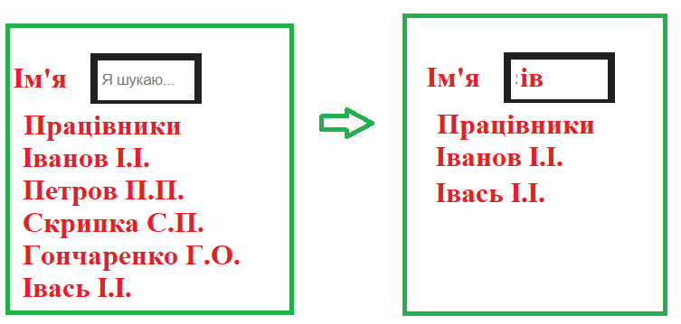
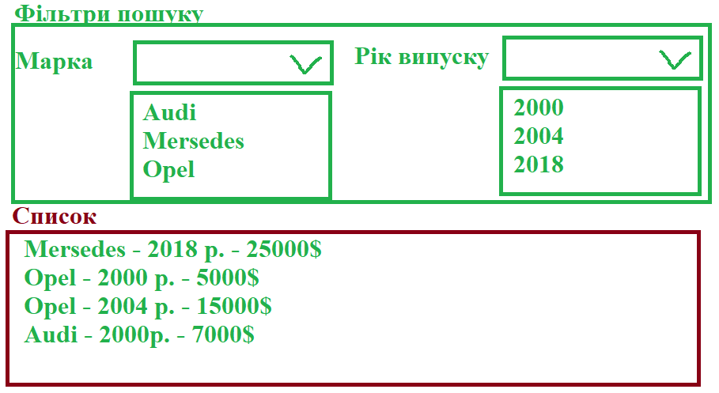
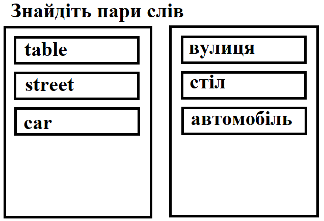
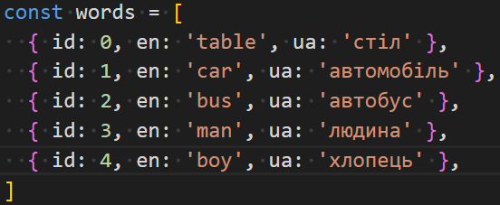
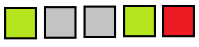
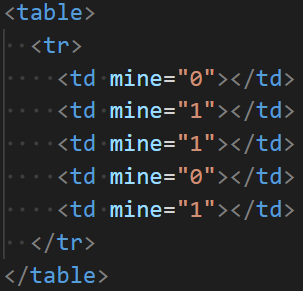
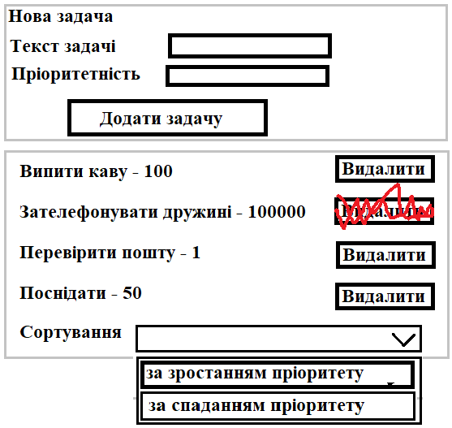

Розробити елемент для вводу кількості вибраного товару за зразком (мінімальна кількість 1, максимальна кількість 10, при перевищенні блокувати кнопку)
Динамічний пошук. Є список працівників і поле пошуку. При введенні відображаються усі, які містять вказаний фрагмент
Дано список автомобілів (марка, рік випуску, ціна). Сформувати елементи для фільтрування з використанням випадаючого списку (контент цих випадаючих списків сформувати у залежності від переданого списку).
Перекладач. Користувачу виводять змішані картки з словами на англійській і українській мові. Користувач поступово клікає на картки (виділяємо синьою рамкою). Якщо знайдено правильні пари карток, що відповідають одному слову, то видаляємо ці картки. Інакше - виділяємо червоною рамкою і через секунду забираємо рамку.
 Однорядковий сапер. Однорядкова таблиця, до клітинок якої додано інформацію про наявність міни (використати атрибути). Спочатку клітинки сірі. При натисненні на клітинку аналізується чи є там міна і тоді колір стає червоним, якщо немає – зеленим. Додати можливість відкриття усіх сусідніх незамінованих клітинок при відкритті незамінованої клітинки.
 Розробити ToDo менеджер. Користувач вводить текст задачі та пріоритетність. Відображається список доданих задач з можливістю видалення задач та сортування за пріоритетністю.
